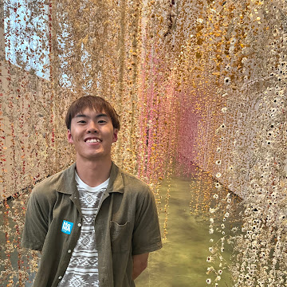

Shota Suzuki
PhD Student at Takeuchi Laboratory,
Department of Electrical Engineering and Information Systems, The University of Tokyo
About Me
I am conducting research on novel memory-centric computing systems. I tackle challenges by leveraging knowledge from a wide range of fields, including algorithms, architecture, circuits, and devices.
Areas of expertise: Large Language Models, Computer Architecture, Computation-in-Memory, Resistive Random-Access Memory (ReRAM)
Hobbies & Interests: Skiing (SAJ Level 2), Language Learning (Currently on a 750-day German streak on Duolingo!)
News
-
Apr 1, 2026
Selected for the “Advanced Human Resource Development Leading Green Transformation (GX) (SPRING GX)” project at The University of Tokyo.
-
Apr 1, 2026
Enrolled in the Ph.D. program at The University of Tokyo.
-
Mar 24, 2026
Completed the Master's program at The University of Tokyo.
-
Mar 15, 2026
Presented two papers at the 73rd JSAP Spring Meeting (in Japanese).
-
Feb 9, 2026
Paper published in the Japanese Journal of Applied Physics (JJAP).
-
Feb 5, 2026
Received an award in the Large Language Model (LLM) category at the "Chipathon (Semiconductor Design Hackathon)", Graduate School of Engineering, The University of Tokyo.
-
Dec 3, 2025
Presented two papers at the Design Gaia 2025 (in Japanese).
-
Sep 18, 2025
Presented a paper at the International Conference on Solid State Devices and Materials (SSDM).
-
Jun 8, 2025
Presented a paper at the IEEE Silicon Nanoelectronics Workshop (SNW).
-
Aug 7, 2024
Presented a paper at the 8th cross-disciplinary Workshop on Computing Systems, infrastructures, and Programming (xSIG 2024) and received the Best Research Award (in Japanese).
-
Apr 1, 2024
Enrolled in the Master's Program at The University of Tokyo.
Education
-
Apr 2026 - present
The University of Tokyo, Ph.D in Electrical Engineering and Information Systems
Advisor: Prof. Ken Takeuchi
-
Apr 2024 - Mar 2026
The University of Tokyo, Master of Engineering in Electrical Engineering and Information Systems
Advisor: Prof. Ken Takeuchi
Master's Thesis: “Research on Analysis of Changes in Current by Read-disturb on Multi-level Cell ReRAM and ReRAM Application for KV Cache of Large Language Models”
-
Apr 2020 - Mar 2024
The University of Tokyo, Bachelor of Engineering in Electrical and Electronic Engineering
Thesis Advisors: Prof. Shuichi Sakai and Prof. Hidetsugu Irie
Graduation Thesis: “Microarchitecture Design of Dynamic Approximate Architecture Based on Execution Time,” (in Japanese)
Work Experience
-
Oct 2022 - Sep 2025
Part-time Engineer, TOWN, Inc.
Responsible for building and operating cloud infrastructure using AWS and automating tests using Serverspec. Participated in a project to automate server construction using Microsoft Azure OpenAI.
-
Mar 2025 - Jul 2025
Teaching Assistant, The University of Tokyo
Assisted in teaching the course “Prototyping Experience to Shape Ideas - Prototype Design in the AI Era” for first- and second-year undergraduate students.
-
Oct 2024 - Dec 2024
Teaching Assistant, The University of Tokyo
Assisted in teaching the laboratory course “Approximate Computing for Machine Learning Applications” for third-year undergraduate students.
-
Aug 2024 - Sep 2024
Research Internship, University of Leoben
Conducted an IAESTE internship program on the analysis of X-ray diffraction spectra using neural networks.
Mentor: Assoc. Prof. Ernst Gamsjäger
-
Feb 2024 - Jul 2024
Teaching Assistant, The University of Tokyo
Assisted in teaching the course “Prototyping Experience to Shape Ideas - From Robots to Home Appliances” for first- and second-year undergraduate students.
-
May 2024 - May 2024
Teaching Assistant, The University of Tokyo
Assisted in teaching the laboratory course “Analog Circuits” for third-year undergraduate students.
-
Mar 2024 - May 2024
Teaching Assistant, The University of Tokyo
Assisted in teaching the course “VLSI Architecture” for fourth-year undergraduate students.
-
Feb 2023 - Jul 2023
Teaching Assistant, The University of Tokyo
Assisted in teaching the course “Prototyping Experience to Shape Ideas - From Robots to Home Appliances” for first- and second-year undergraduate students and served as a teaching assistant coordinator.
-
Mar 2022 - Jul 2022
Teaching Assistant, The University of Tokyo
Assisted in teaching the course “Prototyping Experience to Shape Ideas - From Robots to Home Appliances” for first- and second-year undergraduate students.
Publications
Refereed
Journal Articles
-
Chihiro Matsui, Ayumu Yamada, Shota Suzuki, Naoko Misawa, and Ken Takeuchi, “NanoCiM: Nano-ReRAM Computation-in-Memory with Neural Network Weight-aware X-Address Scrambling to Suppress IR Drop-oriented Bit-line MAC Current Variation,”
IEEE Transactions on Circuits and Systems for Artificial Intelligence (TCASAI), (Early Access).
[DOI]
-
Shota Suzuki, Naoko Misawa, Chihiro Matsui, and Ken Takeuchi, “Mapping strategy of quantized KV cache of LLMs into mixture of SLC and MLC ReRAM among various quantization methods,”
Japanese Journal of Applied Physics (JJAP), vol. 65, pp. 03SP09, February 9, 2026.
[DOI]
-
Yuya Degawa, Shota Suzuki, Junichiro Kadomoto, Hidetsugu Irie, and Shuichi Sakai, “Cycle-Oriented Dynamic Approximation: Architectural Framework to Meet Performance Requirements,”
IEEE Computer Architecture Letters (CAL), vol. 23, no. 2, pp. 211-214, August 6, 2024.
[DOI]
International Conferences
-
Shota Suzuki, Naoko Misawa, Chihiro Matsui, and Ken Takeuchi, “Hybrid SLC/MLC ReRAM for Quantized KV Cache in Transformer-based LLM,”
International Conference on Solid State Devices and Materials (SSDM) Poster Late News, September 17, 2025, pp. 755-756.
[DOI]
-
Shota Suzuki, Naoko Misawa, Chihiro Matsui, and Ken Takeuchi, “Observation of State Change in 40nm TaOX ReRAM Cells during Read-disturb,”
IEEE Silicon Nanoelectronics Workshop (SNW), June 8, 2025, pp. 26-27.
[DOI]
Domestic Conferences
-
Shota Suzuki, Yuya Degawa, Tomohiro Yoshita, Junichiro Kadomoto, Hidetsugu Irie, and Shuichi Sakai, “RTL Design and Soft Processor Implementation of an Architecture for Cycle-oriented Dynamic Approximation,”
The 8th cross-disciplinary Workshop on Computing Systems, Infrastructures, and Programming (xSIG 2024), August 7, 2024, pp. 1-14, (Best Research Award).
Non-Refereed
Domestic Conferences / Workshops
-
Shota Suzuki, Naoko Misawa, Chihiro Matsui, and Ken Takeuchi, “Investigation of Current Fluctuations and RTN Frequency Change Induced by Read Stress in ReRAM,”
The 73rd JSAP Spring Meeting, March 15, 2026, 15a-M_123-10.
-
Shota Suzuki, Naoko Misawa, Chihiro Matsui, and Ken Takeuchi, “ReRAM Mapping Method Based on Bit-Level Error Robustness of Quantized KV Cache,”
The 73rd JSAP Spring Meeting, March 15, 2026, 15a-M_123-9.
-
Shota Suzuki, Naoko Misawa, Chihiro Matsui, and Ken Takeuchi, “Investigation of ReRAM Mapping Techniques for Storing Quantized KV Cache in LLMs,”
IEICE Technical Report, vol. 125, no. 260, VLD2025-59, pp. 227-232, December 3, 2025.
-
Shota Suzuki, Naoko Misawa, Chihiro Matsui, and Ken Takeuchi, “Changes in Read Current and RTN Frequency due to Read-disturb in 40nm TaOX ReRAM,”
IEICE Technical Report, vol. 125, no. 261, ICD2025-50, pp. 74-79, December 2, 2025.
-
Daichi Mikubo, Shota Suzuki, Shu Sugita, Junichiro Kadomoto, and Hidetsugu Irie, “Acceleration of speech feature extraction using an architecture with dynamically controllable computational precision,”
The 24th Forum on Information Technology (FIT 2025), September 4, 2025, CC-002.
-
Yifan Wang, Adil Padiyal, Daqi Lin, Shota Suzuki, Chihiro Matsui, and Ken Takeuchi, “A Design for Digital-CiM INT8 Transformer Accelerator with Pipeline,”
The 72nd JSAP Spring Meeting, March 14, 2025, 16a-K306-5.
Awards
-
Feb 2026
Award in the Large Language Model (LLM) Category, "Chipathon (Semiconductor Design Hackathon)", Graduate School of Engineering, The University of Tokyo
Recognized in the LLM Track for developing and optimizing a system to execute a language model on an FPGA board.
-
Aug 2024
Best Research Award, The 8th cross-disciplinary Workshop on Computing Systems, Infrastructures, and Programming (xSIG 2024)
Grants & Scholarships
-
Apr 2026 - Mar 2029
The University of Tokyo “Advanced Human Resource Development Leading Green Transformation (GX) (SPRING GX)” Project student, JST Support for Pioneering Research Initiated by the Next Generation (SPRING) Program
-
Apr 2024 - Mar 2026
Student Supporters Club Scholarship (Grant-type), The University of Tokyo Foundation
Certificates
-
Oct 2025
Certificate of Completion, AI and Semiconductor Course, Systems Design Lab and Matsuo-Iwasawa Lab, Graduate School of Engineering, The University of Tokyo
Completed a comprehensive program on semiconductor technologies, computer architecture, and hardware/software co-design for AI workloads.
-
Jul 2025
Certificate of Completion, Deep Learning Basic Course, Matsuo-Iwasawa Lab, Graduate School of Engineering, The University of Tokyo
Completed a practical program on the fundamental theories of deep learning and its implementation (e.g., PyTorch, CNNs).
-
Sep 2024
Internship Certificate, IAESTE (The International Association for the Exchange of Students for Technical Experience)
Completed an internship program at the University of Leoben on the analysis of X-ray diffraction spectra using neural networks.
-
Feb 2024
Certificate of Completion, Global Consumer Intelligence (GCI) Program, Department of Technology Management for Innovation, The University of Tokyo
Completed a comprehensive data science and machine learning program (data analysis, predictive modeling using Python).
-
Nov 2023
Go Global Gateway (GGG) Certificate of Recognition, Center of Global Education, The University of Tokyo
Awarded for active engagement in international activities, including an experiential learning program at KTH (Sweden), a short-term study abroad at the University of Hawaii, and serving as a UTokyo GUC Student Ambassador.